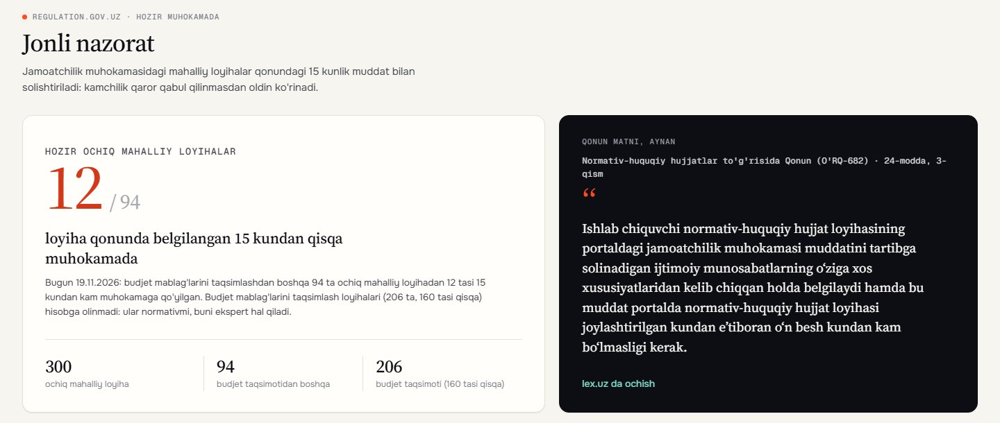
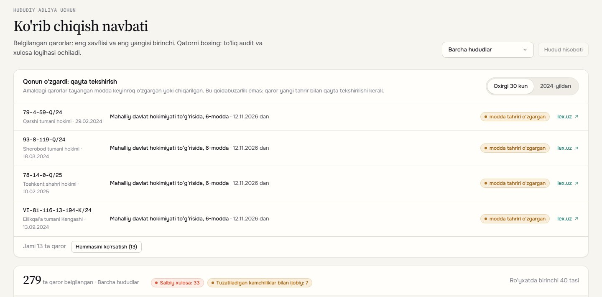
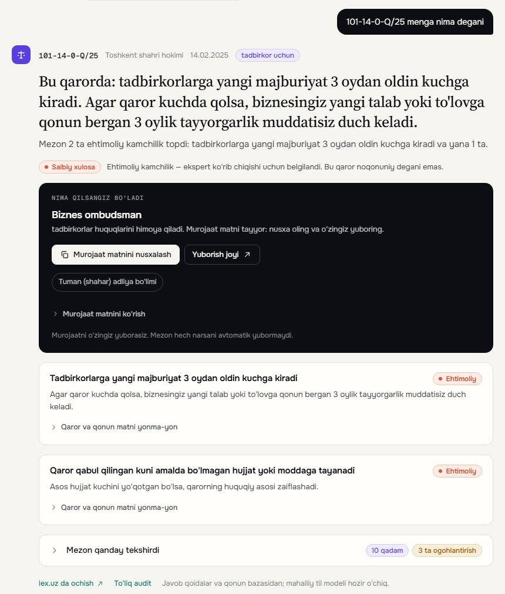
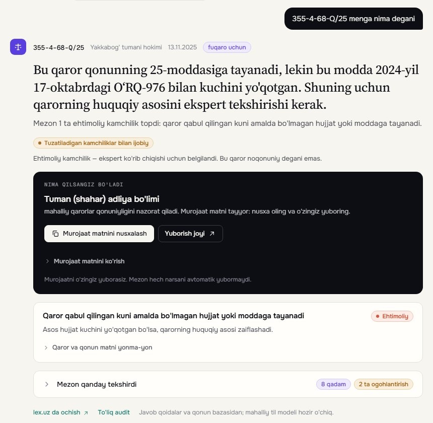

Ekspert, tadbirkor va fuqaro nimani ko'radi
Ishlab turgan platformaning haqiqiy ekranlari (http://127.0.0.1:8090), 19.11.2026 da olingan. Izohlar har bir qism nimani anglatishini aytadi.
| Kim | Qayerdan boshlaydi | Nima oladi | Keyin |
|---|---|---|---|
| Adliya eksperti | "Adliya navbati" va "Qaror auditi" | ikkala iqtibosli belgilar, agent yo'li, 3333-son buyruq formatidagi xulosa loyihasi | har bir belgini hal qiladi, tahrir qilib imzolaydi |
| Tadbirkor | "Mezon AI", Tadbirkor rejimi | qaror biznes uchun nimani anglatishi va ehtimoliy kamchiliklar | Biznes ombudsman yoki tuman adliyasi, tayyor murojaat matni bilan |
| Fuqaro | "Mezon AI", Fuqaro rejimi | bitta sodda gap, isbot bir bosishda | tuman (shahar) adliya bo'limi, tayyor murojaat matni bilan |
Hozir muhokamadagi loyihalarni ko'radi
"Jonli nazorat" regulation.gov.uz dagi har bir ochiq mahalliy loyihani qonundagi 15 kunlik eng kam muddat bilan solishtiradi. O'ngda: moddaning o'zi, so'zma-so'z, lex.uz havolasi bilan.

Navbatni ochadi: nima o'zgardi va nima belgilandi
"Adliya navbati". Yuqoridagi "Qonun o'zgardi" paneli amaldagi qarorlar tayangan modda keyinroq o'zgargan holatlarni ko'rsatadi. Bu qoidabuzarlik emas: qarorni yangi tahrir bilan qayta o'qish kerak degani. Pastda belgilangan qarorlar, eng xavflisi va eng yangisi birinchi.

Bitta qarorni ochadi: o'lik modda belgisi
355-4-68-Q/25, Yakkabog' tumani hokimi, 13.11.2025. Mezon 9 ta tekshiruv o'tkazdi. Yettitasi kamchilik topmadi, bittasi bu qarorga taalluqli emas, bittasi belgi qo'ydi (pushti katak).
Qarorda u MDH Qonunining "6 va 25-moddalariga asosan" qabul qilingani yozilgan. 25-modda 17.10.2024 dagi O'RQ-976 bilan kuchini yo'qotgan, ya'ni bir yildan ko'proq oldin.
Chapda, qizil: qarordan iqtibos. O'ngda, yashil: lex.uz ning 25-modda haqidagi o'z izohi va qo'llaniladigan qoida (NHH Qonuni O'RQ-682, 18-modda 3-qism, 13.11.2025 holatiga).
Holat: "ehtimoliy qoidabuzarlik, ekspert ko'rib chiqishi uchun". Belgi ostida ekspert To'g'ri / Noto'g'ri / Noaniq tugmasini bosadi.

Tahrir qilib imzolash uchun xulosa loyihasini oladi
"Xulosa loyihasi" Adliya vazirligining 3333-son buyrug'i formatida yozilgan. Taklif: "bartaraf etiladigan kamchiliklar bilan ijobiy". Har bir kamchilikda qarordan iqtibos, lex.uz holati va huquqiy asos bor; keyin 29 omilli korrupsiyaga qarshi cheklist (O'RQ-860) va ekspert qarori hamda imzosi uchun bo'sh joylar. "Word'da ochish" shu matnni Word'da ochadi.

Mezon AI dan ekspert sifatida so'raydi va agent qanday tekshirganini ko'radi
"Mezon AI" da ekspert "Adliya eksperti" ni tanlab, qaror haqida so'raydi. Javobda o'sha belgi ikkala iqtibos bilan, "Mezon qanday tekshirdi" bo'limida esa agentning 8 qadami.
Har qadam natijasi bilan vosita chaqiruvi: qaror matnini o'qidi, 9 ta qoidani ishlatdi, 6-modda 13.11.2025 da amalda bo'lganini tekshirdi (ha), keyin 25-moddani (yo'q: kuchini yo'qotgan).
Hozircha javoblar qoidalar va qonun bazasidan; mahalliy til modeli hali o'chiq. Qwen ni ulash juma kungi vazifa.

Qaror raqamini yozadi, "Tadbirkor" ni tanlaydi
Misol: 101-14-0-Q/25, Toshkent shahri hokimi, 14.02.2025, shahardagi bozorlar va savdo komplekslari haqida.
Biznes uchun nimani anglatishini o'qiydi
Sarlavha sodda aytadi: tadbirkorlarga yangi majburiyat 3 oydan oldin kuchga kiradi, ya'ni biznes qonun bergan 3 oylik tayyorgarlik muddatisiz yangi talab yoki to'lovga duch keladi. Mezon 2 ta ehtimoliy kamchilik topdi.
Qayerga borishni biladi
Qora blok kanalni aytadi: Biznes ombudsman (va tuman adliyasi), nusxa olish uchun tayyor murojaat matni bilan. Murojaatni tadbirkor o'zi yuboradi; Mezon hech narsani avtomatik yubormaydi.
Har bir kamchilik "Ehtimoliy" deb belgilangan. Ekranda ochiq yozilgan: bu qaror noqonuniy degani emas.

Oddiy so'zlar bilan so'raydi
"355-4-68-Q/25 menga nima degani", "Fuqaro" tanlangan holda. Lotin yoki kirill, ikkalasi ham ishlaydi.
Qisqa, sodda javob oladi
"Bu qaror qonunning 25-moddasiga tayanadi, lekin bu modda 2024-yil 17-oktabrdagi O'RQ-976 bilan kuchini yo'qotgan. Shuning uchun qarorning huquqiy asosini ekspert tekshirishi kerak."
Bitta keyingi qadamni oladi
Mahalliy qarorlar qonuniyligini nazorat qiladigan tuman (shahar) adliya bo'limi, nusxa olishga tayyor murojaat matni bilan. Yonma-yon iqtiboslar va agent qadamlari bir bosishda.
